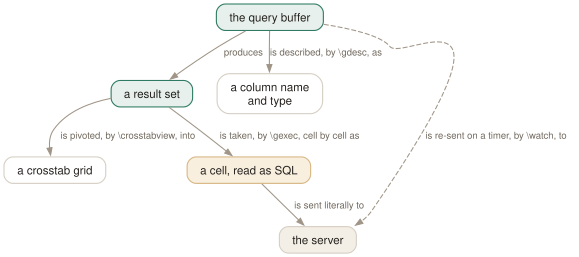

Day 13
Making psql write SQL
Four commands that take a result set and do something other than print it.
By the end of today you can
- generate and run a hundred DDL statements from one query, and see them as they go
- find out a query's result types without running it
- keep a diagnostic query on screen while something else is happening
The catalogue as a source of programs
\gexec sends the buffer, then treats every cell of every row of the result as an SQL statement and runs it. One line, and the database's knowledge of itself becomes something you can act on rather than something you read and then retype.
testdb=# SELECT format('CREATE INDEX ON gx1(%I)', attname)
testdb-# FROM pg_attribute
testdb-# WHERE attrelid = 'gx1'::regclass AND attnum > 0
testdb-# ORDER BY attnum
testdb-# \gexec
CREATE INDEX
CREATE INDEX
The mechanics are worth stating precisely, because they are what makes it safe or not. Rows execute in the order returned, and left to right within a row when there is more than one column. NULL cells are skipped. Each statement is subject to ECHO, to timing, to single-step mode — everything that applies to a statement you typed. And if one fails, the rest continue, unless ON_ERROR_STOP is set.
Two habits make the difference between a tool and a foot-gun. First, run the query with a semicolon and read the output before you run it with \gexec. Because \gexec on an empty buffer re-runs the last query, that inspection is free — look, then press \gexec on its own. Second:
Use format() with %I for identifiers and %L for literals rather than string concatenation. It is the server-side equivalent of yesterday's :"name" and :'name', and it is the reason a table somebody named "Weird Name" does not break the batch.

\gexec feeds the result back to the server as SQL, which makes the catalogue a source of programs rather than a thing to read. The aspect worth remembering is that generated text goes to the server literally: no meta-commands, no variable references.Asking what a query would return
\gdesc reports the column names and types of the current buffer without executing it. The server still parses and plans enough to answer, so genuine errors surface normally — but no rows are read and nothing is written:
testdb=# SELECT 1 AS a, now() AS b, ARRAY[1,2] AS c
testdb-# \gdesc
Column | Type
--------+--------------------------
a | integer
b | timestamp with time zone
c | integer[]
(3 rows)
It answers two questions that otherwise cost you a round trip. What type did that expression actually come out as — numeric or double precision, text or varchar? And what will this four-minute reporting query give me, so I can write the CREATE TABLE for its output now rather than after lunch?
Two axes and a grid
\crosstabview runs the buffer and pivots the result: one output column becomes the vertical header, another the horizontal header, and a third fills the cells. With no arguments it takes column 1 as the rows and column 2 as the columns, and requires the result to have exactly three columns so that the third is unambiguous.
testdb=# SELECT first, second, first > 2 AS gt2 FROM my_table
testdb-# \crosstabview first second
first | one | two | three | four
-------+-----+-----+-------+------
1 | f | | |
2 | | f | |
3 | | | t |
4 | | | | t
Header values appear in the order the query returned them, duplicates removed — so the ordering is yours to control with ORDER BY. A fourth argument names a column of integers to sort the horizontal header by independently, which is how you get rows in one order and columns in another:
testdb=# SELECT t1.first AS "A", t2.first+100 AS "B", t1.first*(t2.first+100) AS "AxB",
testdb-# row_number() over(order by t2.first) AS ord
testdb-# FROM my_table t1 CROSS JOIN my_table t2 ORDER BY 1 DESC
testdb-# \crosstabview "A" "B" "AxB" ord
A | 101 | 102 | 103 | 104
---+-----+-----+-----+-----
4 | 404 | 408 | 412 | 416
3 | 303 | 306 | 309 | 312
2 | 202 | 204 | 206 | 208
1 | 101 | 102 | 103 | 104
It is a display command, not an aggregate: if two rows land in the same cell you get an error rather than a sum. Which is the right behaviour — it means the grid you are looking at is a faithful rearrangement of the rows, and any aggregation you want is yours to write in the query.
Keeping a query on the screen
\watch re-runs the buffer until you interrupt it, and it is the reason to stop reaching for watch 'psql -c ...' in another terminal — no reconnection per run, and the whole session's settings apply:
testdb=# SELECT count(*) FROM pg_stat_activity WHERE state = 'active'
testdb-# \watch 5
Thu 10 Sep 2026 01:35:08 PM CEST (every 5s)
count
-------
3
(1 row)
Three stop conditions turn it from an interactive toy into something scriptable, and they can be combined:
i=Norinterval=N- seconds between runs. Bare
\watch 5works too, for compatibility. c=Norcount=N- stop after N executions.
m=Normin_rows=N- stop as soon as the query returns fewer than N rows.
So \watch i=2 m=1 is “tell me when this starts returning something, then stop” — a poll loop in eleven characters. It also stops on its own if the query fails, which means a table being dropped under you ends the watch rather than filling the screen with errors.
The header line carries the \pset title if you have set one, then the time the run started and the interval — so \pset title 'Active backends' gives you a labelled monitor. And WATCH_INTERVAL sets the default interval for the session, with an explicit i= always winning.
Today's habit
Next time you catch yourself about to write out a list of similar statements, write the query that generates them instead — read it, then \gexec it. And put \watch in your fingers for the next incident: a query on screen, refreshing, is worth more than five people running the same SELECT by hand.
Tomorrow: turning yesterday's variables and today's commands into scripts that make decisions.
New vocabulary
Commands
| Command | Does |
|---|---|
\gexec | Run the buffer, then execute every cell of the result as SQL. |
\gdesc | Report the result's column names and types without running it. |
\crosstabview colV colH colD | Pivot the result into a grid. Two columns become the axes. |
\watch i=N c=N m=N | Re-run the buffer every N seconds, at most N times, while it returns N rows. |
Options
| Option | Does |
|---|---|
WATCH_INTERVAL | Default seconds between \watch runs. Default 2; an explicit interval wins. |
PSQL_WATCH_PAGER | A pager for \watch only. Unset by default, because ordinary pagers cannot cope. |
Today's configappend to ~/.psqlrc
Two seconds is aggressive for a query against a busy server's catalogues, and five is long enough to read the result before it is replaced. An explicit interval on the command still wins, so this only changes the default.
\set WATCH_INTERVAL 5
psql reads this once at start-up, after connecting. Re-read it in place with \i ~/.psqlrc.
Drillsdo these in a real terminal, today
Self-check
Answer out loud first, then unfold.
You want to add an index to forty tables. Why is \gexec better than writing the forty statements, and what is the discipline that makes it safe?
Because the catalogue already knows which forty tables, and format('...%I...', relname) quotes each identifier correctly — including the one somebody named with a capital letter. Forty hand-written statements are forty chances to typo, and no chance at all of noticing you missed the forty-first.
The discipline is two keystrokes: run the query with a semicolon first and read what it produced, then recall it and press \gexec. Because \gexec on an empty buffer re-runs the last query, that costs you nothing. And set ECHO to queries so you can see each generated statement go — the manual page recommends exactly this.
Halfway through a \gexec over 200 generated statements, number 87 fails. What happens to 88 through 200?
They run, unless ON_ERROR_STOP is set. \gexec keeps going through a failure by default, which for a batch of CREATE INDEX statements is usually what you want and for a batch of migrations is usually not.
Nor is the batch atomic: each generated statement is sent on its own, so with autocommit on you get 199 committed changes and one failure. If you want all-or-nothing, wrap the whole \gexec in BEGIN and COMMIT yourself — and then Day 8's rules take over, so the first failure aborts the rest anyway.
What can \gexec not generate, and why?
Meta-commands, and anything containing a psql variable reference. The generated text is sent literally to the server, so a cell containing \d mytable or :schema is a syntax error rather than a psql instruction.
That is a real constraint rather than an oversight — psql would otherwise be executing arbitrary client-side commands out of query results, which is a much larger surface than executing SQL. When you genuinely need generated meta-commands, generate them into a file with \g and then \i it.
\watch with a pager set to always produces nonsense. Why does psql have a separate pager variable for it?
Because a pager expects a document that ends, and \watch produces a stream that does not. So PSQL_WATCH_PAGER is consulted instead of PSQL_PAGER during a watch, and it is unset by default — no pager at all, which is why watching works out of the box.
The manual page names the tool it was added for: pspg --stream, which understands psql's output format and can redraw it. If you do not have pspg, leave the variable alone; setting it to less is how you get the nonsense.
Cheat sheet
Look before you \gexec. Semicolon first, read the output, then \gexec on the empty buffer.
SELECT format('CREATE INDEX ON %I(%I)', c.relname, a.attname) FROM ... ;
\gexec -- runs every cell of the result as SQL, in order, NULLs skipped
\set ECHO queries <- see each generated statement as it goes
one failure does NOT stop the rest, unless ON_ERROR_STOP is set
no meta-commands, no :vars: the text goes to the server LITERALLY
\gdesc -- column names and types, WITHOUT running the query
\crosstabview colV colH colD [sortcolH] -- pivot; ORDER BY controls header order
two rows in the same cell = an error, not a sum
\watch i=5 c=10 m=1 -- every 5s, at most 10 times, until fewer than 1 row
stops on failure too; \pset title labels the header; WATCH_INTERVAL sets the default
PSQL_WATCH_PAGER, not PSQL_PAGER — and unset is the right value unless you have pspg
Everything through Day 13
Keys
| Key | Does |
|---|---|
| C-c | Abandon the line you are typing and empty the query buffer. |
| C-d | End the session — but only when the buffer is empty. |
| Tab | Complete a keyword or an object name. Twice for a menu, depending on the library. |
| UpC-p | The previous line from the history. |
| C-r | Reverse incremental search through the history. The one worth learning today. |
Commands
| Command | Does |
|---|---|
psql | Connect with the defaults and start an interactive session. |
; | Dispatch the buffer. Not a meta-command — SQL's own statement terminator. |
\g | Dispatch the buffer, exactly as a semicolon does. |
\p | Print the buffer without sending it. \print in full. |
\r | Reset: throw the buffer away. \reset in full. |
\e | Edit the buffer in $EDITOR; on exit it is re-parsed and run. |
\w file | Write the buffer to a file instead of sending it. |
\; | Append a semicolon to the buffer without dispatching it. |
\? | Every meta-command, in twelve groups. 121 of them in 18.6. |
\h SELECT | Syntax for one SQL command. \h alone lists what it knows. |
\q | Quit. |
\c dbname | Reconnect to another database, reusing host, port and user. |
\c - user | Reconnect as another user. A dash means “leave that one as it is”. |
\c -reuse-previous=on ... | Merge a conninfo string onto the current parameters. |
\conninfo | A twelve-row table describing the live connection. |
\password | Change a password without it reaching your history or the server log. |
\encoding | Show the client encoding, or set it. |
\d | Bare: tables, views, materialized views, sequences and foreign tables. |
\d my_table | Describe one relation: columns, types, nullability, defaults, indexes, constraints. |
\d+ my_table | Adds storage, compression, stats target and per-column comments. |
\dt | Tables. The letters combine — \dti lists tables and indexes. |
\di \dv \dm \ds \dE | Indexes, views, materialized views, sequences, foreign tables. |
\dn | Schemas. \dn+ adds permissions and comments. |
\l | Databases, with owner, encoding, locale provider and privileges. |
\dP | Partitioned tables and indexes; add n to include non-root ones. |
\dx | Installed extensions; \dx+ lists everything each one owns. |
\df pattern | Functions, with result type, argument types and kind. |
\df pattern t1 t2 | Extra arguments are type patterns, matched positionally. |
\sf name | The function's source as CREATE OR REPLACE. \sf+ numbers the body. |
\sv name | The same for a view. \ev and \ef edit rather than show. |
\du | Roles and their attributes. \dg is the same command. |
\drg | Role grants: who is a member of what, with ADMIN/INHERIT/SET. |
\dp | Access privileges on tables, views and sequences. \z is the same command. |
\ddp | Default privileges — what future objects will be created with. |
\dconfig | Server parameters set to non-default values. \dconfig * for all of them. |
\drds | Settings attached to a role, a database, or the pair. |
\dT \do \da | Types, operators and aggregates — same grammar, rarer questions. |
\pset | With no argument, print all 22 printing options and their current values. |
\x | Toggle expanded mode. \x auto is the setting worth keeping. |
\a \t \f \C \H | Shortcuts kept for compatibility: format, tuples_only, fieldsep, title, HTML. |
\set | With no argument, list every variable currently set, with its value. |
\set NAME value | Set a psql variable. Several values are concatenated. |
\unset NAME | Delete it — or, for a control variable, restore its default. |
\echo :NAME | Read a variable back. The cheapest debugging tool psql has. |
\i ~/.psqlrc | Re-read the startup file without restarting. Tilde expansion works. |
\e | Edit the buffer — or a file, or the last query — optionally at a line number. |
\ef name | Fetch a function's definition into your editor. \ev for a view. |
\s file | Print the command history, or write it to a file. |
\errverbose | Repeat the last error at maximum verbosity, changing no settings. |
\timing on | Report how long each statement took. Milliseconds, then m:ss past a second. |
\copy tbl FROM 'file' | Client-side load. psql reads the file, as you, with no server privileges. |
\copy (query) TO 'file' | Client-side export. A table name, or a query in parentheses. |
\copy tbl FROM PROGRAM 'cmd' | Run a command on the client and load its output. TO PROGRAM pipes out. |
\copy tbl FROM stdin | Data rows follow, up to a line containing only \.. |
\copy ... TO pstdout | psql's real stdout, ignoring \o. pstdin is the input twin. |
\copy ... FROM 'f' WHERE cond | Filter rows as they load — the condition is evaluated server-side. |
COPY ... TO STDOUT then \g f | The multi-line, interpolating alternative to \copy. |
\o file | Point all future query output at a file. Bare \o restores stdout. |
\o |command | Pipe all future query output to a shell command. |
\g file | This one query's output to a file. \g |cmd pipes it instead. |
\g (opt=val ...) | A one-shot \pset for this query only. |
\qecho text | Write to the query-output channel, so it lands in the same file. |
\warn text | Write to standard error, so it never lands in the file. |
\w file | Write the query buffer — not its output — to a file. |
\lo_import file | Store a file as a large object. Also \lo_export, \lo_list, \lo_unlink. |
\i file | Read and execute a file. The path is relative to the current directory. |
\ir file | The same, resolved relative to the directory of the including script. |
\! command | Run a shell command. With no argument, a sub-shell until you exit it. |
:name | Substitute the value literally — unquoted, unchecked, unsafe. |
:'name' | Substitute as a properly quoted SQL literal. Handles embedded quotes. |
:"name" | Substitute as a properly quoted SQL identifier. Handles spaces and case. |
:{?name} | TRUE or FALSE depending on whether the variable exists. |
`command` | Substitute a shell command's output, trailing newline removed. |
\gset [prefix] | Store a one-row result into variables named after its columns. |
\getenv var ENVVAR | Read an environment variable into a psql variable. |
\setenv NAME value | Set an environment variable for psql and anything it runs. |
\prompt [text] name | Ask the operator for a value and store it. |
\gexec | Run the buffer, then execute every cell of the result as SQL. |
\gdesc | Report the result's column names and types without running it. |
\crosstabview colV colH colD | Pivot the result into a grid. Two columns become the axes. |
\watch i=N c=N m=N | Re-run the buffer every N seconds, at most N times, while it returns N rows. |
Options
| Option | Does |
|---|---|
-h -p -U -d | Host, port, user, database. -d also takes a whole conninfo string. |
-w -W | Never prompt for a password / always prompt. Both persist across \c. |
-l | List databases and exit. Connects to postgres unless told otherwise. |
PGHOST PGPORT PGUSER PGDATABASE | libpq's defaults for the four parameters. |
PGPASSFILE | The password file. Default ~/.pgpass, and it must be mode 0600. |
PGSERVICEFILE | Named connection recipes. Default ~/.pg_service.conf. |
S | Include system objects: \dtS. Supplying any pattern does this too. |
+ | More columns — and a size lookup per relation, so it is not free. |
x | Expanded output for this listing only. Goes after S or +, never straight after \d. |
a n p t w | Function-kind filters for \df: aggregate, normal, procedure, trigger, window. |
format | aligned (default), wrapped, unaligned, csv, html, asciidoc, latex, troff-ms. |
expanded | on / off (default) / auto — vertical records, always or only when too wide. |
null | What to print for NULL. Default is nothing, which reads exactly like an empty string. |
border | 0 none, 1 dividing lines (default), 2 a full frame. |
linestyle | ascii (default) or unicode. Aligned and wrapped only. |
footer | The (n rows) line. off removes it. |
columns | Target width for wrapped, and the threshold for expanded auto. 0 means use $COLUMNS. |
pager | off / on (default, meaning “only when it does not fit”) / always. |
xheader_width | full (default) / column / page / an integer — how long the record rule may be. |
-X | Skip both startup files. Every script should pass this. |
PSQLRC | Where the personal startup file lives. Overrides ~/.psqlrc. |
PGSYSCONFDIR | Where the system-wide psqlrc is looked for. |
QUIET | Suppress psql's informational chatter. The startup file's bookends. |
VERSION_NAME SERVER_VERSION_NUM | psql's version and the server's, as a string and a number. |
HISTFILE | Where history is kept. Default ~/.psql_history. Must be set in psqlrc. |
HISTSIZE | How many commands to keep. Default 500; a negative value means no limit. |
HISTCONTROL | ignorespace / ignoredups / ignoreboth / none (default). |
COMP_KEYWORD_CASE | Casing for completed keywords. Default preserve-upper. |
PSQL_EDITOR EDITOR VISUAL | Checked in that order. vi if none of them is set. |
PSQL_EDITOR_LINENUMBER_ARG | How a line number is passed. Default +, which suits vi and emacs. |
AUTOCOMMIT | On by default: every statement commits itself unless you opened a block. |
ON_ERROR_ROLLBACK | off (default) / interactive / on — implicit per-statement savepoints. |
ON_ERROR_STOP | Stop at the first error instead of carrying on. Exit code 3 in a script. |
VERBOSITY | default / verbose / terse / sqlstate. |
SHOW_CONTEXT | never / errors (default) / always — the CONTEXT field. |
ERROR SQLSTATE ROW_COUNT | Set after every statement: did it fail, with what code, how many rows. |
LAST_ERROR_MESSAGE LAST_ERROR_SQLSTATE | The most recent failure, still there after later successes. |
-o file | Send all query output to a file, decided at start-up. |
-L file | Log each query and its output to a file, as well as to the normal destination. |
tuples_only | Data only — no header, no footer, no title. -t on the command line. |
fieldsep recordsep csv_fieldsep | Separators for unaligned and CSV output; -F, -R, -z, -0. |
-c command | Run one command and exit. Repeatable, and mixable with -f. |
-f file | Read commands from a file. Repeatable, and gives errors a file and line number. |
-X | Skip the startup files. Every script wants this. |
-q | No banner, no informational chatter. Same as QUIET. |
-v NAME=value | Set a variable from the command line. The value is not interpolated. |
-1 | Wrap everything the -c and -f options do in one transaction. |
ECHO | none (default) / queries (-e) / all (-a) / errors (-b). |
-s -S | Single-step: confirm each statement. Single-line: a newline terminates one. |
SHOW_ALL_RESULTS | Show every result of a \;-combined query, not just the last. Default on. |
SHELL_ERROR SHELL_EXIT_CODE | Whether the last shell command failed, and its exit status. |
WATCH_INTERVAL | Default seconds between \watch runs. Default 2; an explicit interval wins. |
PSQL_WATCH_PAGER | A pager for \watch only. Unset by default, because ordinary pagers cannot cope. |